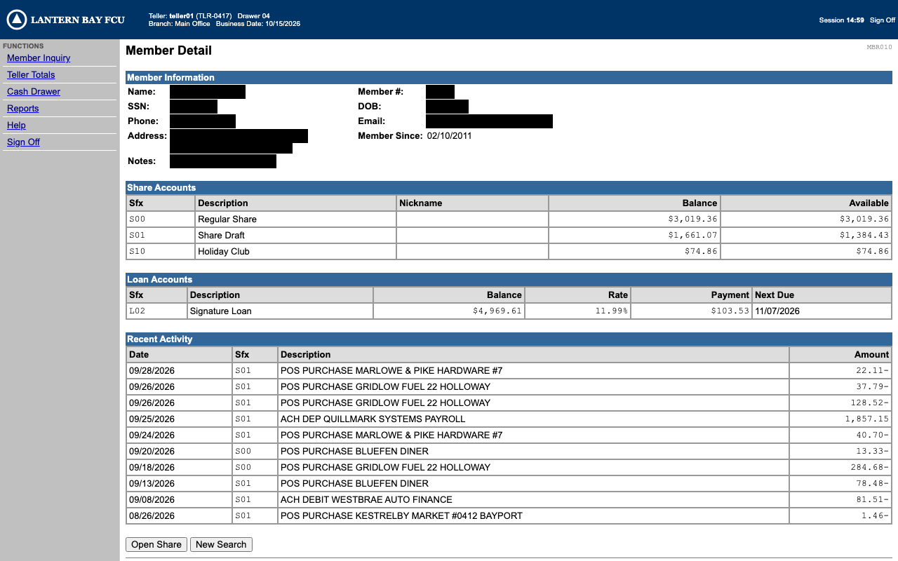
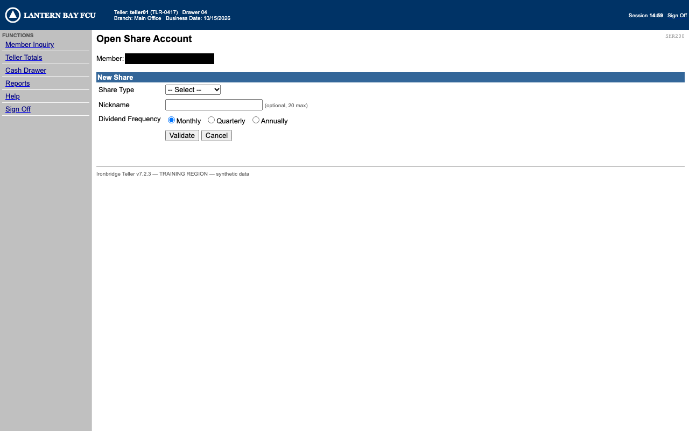
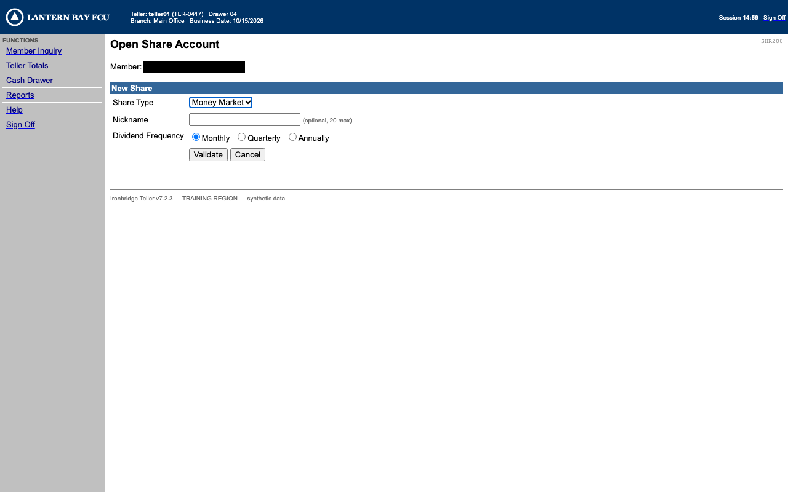
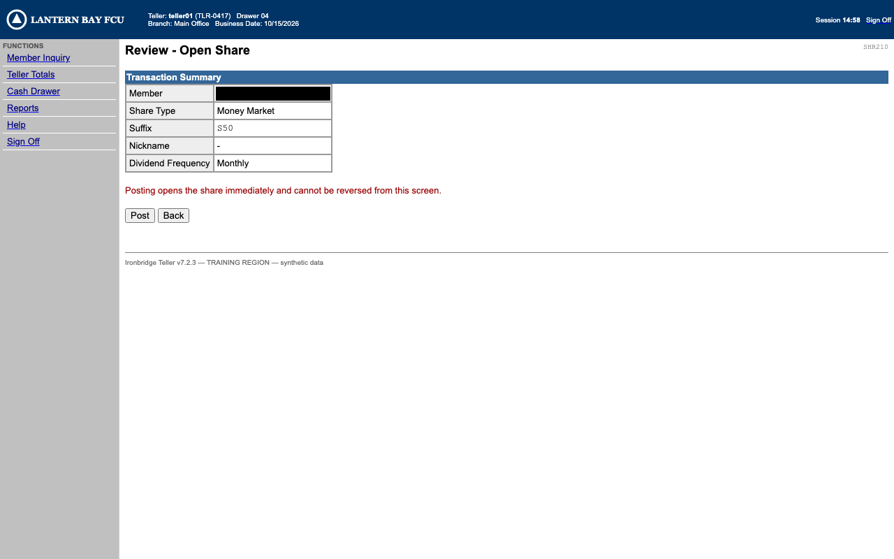

SCRIPTED OPERATOR (stands in for a person)
Run r_20261016T055915_b7cc28: failed OUTCOME_UNCERTAIN SESSION_LOST after the irreversible step 'post_new_share': session_expired detected. Check the app before trying again: replay never retries after a commit
| step | strategy | rank | agreement |
|---|---|---|---|
| open_member_inquiry | a11y | 0 | True |
| enter_member_id | anchor | 0 | True |
| select_member_result | anchor | 0 | True |
| click_open_share | a11y | 0 | True |
| select_share_type | anchor | 0 | True |
| post_new_share | a11y | 0 | True |
| # | actor | event | detail |
|---|---|---|---|
| 1 | harness | surface.act | action=navigate; status=done |
| 4 | harness | surface.act | step_id=login.enter_username; action=fill; status=done |
| 6 | harness | surface.act | step_id=login.enter_password; action=fill; status=done |
| 8 | harness | surface.act | step_id=login.sign_on; action=click; status=done |
| 11 | system | step.start | step_id=open_member_inquiry; action=click |
| 13 | automation | surface.act | step_id=open_member_inquiry; action=click; status=done |
| 16 | system | step.start | step_id=enter_member_id; action=fill |
| 18 | automation | surface.act | step_id=enter_member_id; action=fill; status=done |
| 21 | system | step.start | step_id=select_member_result; action=click |
| 23 | automation | surface.act | step_id=select_member_result; action=click; status=done |
| 26 | system | step.start | step_id=click_open_share; action=click |
| 28 | automation | surface.act | step_id=click_open_share; action=click; status=done |
| 31 | system | step.start | step_id=select_share_type; action=select |
| 33 | automation | surface.act | step_id=select_share_type; action=select; status=done |
| 36 | system | step.start | step_id=confirm_share_type_selection; action=press |
| 37 | automation | surface.act | step_id=confirm_share_type_selection; action=key; status=done |
| 40 | system | step.start | step_id=post_new_share; action=click |
| 41 | system | approval.requested | step_id=post_new_share; intervention=iv_20261016T055918_f06afc |
| 42 | system | approval.granted | step_id=post_new_share |
| 44 | automation | surface.act | step_id=post_new_share; action=click; status=done |
| 46 | system | state.detected | step_id=post_new_share; state=session_expired |
| 47 | system | run.failure | step_id=post_new_share; category=OUTCOME_UNCERTAIN; message=SESSION_LOST after the irreversible step 'post_new_share': session_expired detected. Check the app before trying again: replay never retries after a commit |









